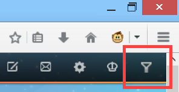

filter Sina Weibo by keywords, original, topic, source, etc.; modify layout
script have not been done. It may not stable. And you may lose your setting after update.
Please use Mozilla Firefox Browser to install this script.
You need to install Greasemonkey addon first. After install and restart firefox, click the "INSTALL SCRIPT" button to apply install.
After installation, click the funnel icon on right top of page to config this script.

Filter weibo by keyword, regexp, author, source, etc.
Filter out suggestion Weibo and other contents in Weibo list
Ad Block
Clean webpage layout
Add "View Original" link
This script do not collect any of your personal information.
The network access of this script is limited in related interface of Sina Weibo. This script use network for access or transport the following datas:
Your settings and your account id is storaged in browser profile without any encryption. Anyone who use the same computer may access these data. So do not use this script in public computer.
If you export settings, the exported file contains all your settings which may include some personal information. Please avoid to spread it to others.
YAWF (Yet Another Weibo Filter) is under the MIT License.
You may visit project host page for more information.
If you find any bugs or have feature request, please report them in the feed back page.
Some codes of this script come from 眼不见心不烦 (Weibo Content Filter) script.